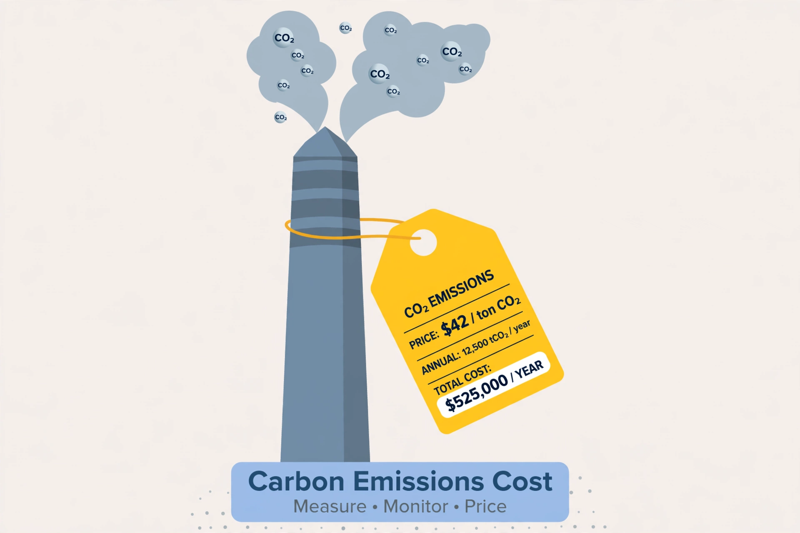

Carbon tax

A carbon tax is a fee levied on the carbon content of fossil fuels, and thus on the carbon dioxide emitted when they burn, usually charged upstream at the mine, well or port and passed through into energy prices. It is one of the two main instruments of carbon pricing, alongside {L('Emissions_trading','emissions trading')}.
By making pollution carry a price, the tax rewards every way of emitting less — efficiency, switching fuels, changing behaviour — without regulators having to choose technologies.
Experience
Finland introduced the first carbon tax in 1990, and Sweden's (1991) became the world's highest and most durable, paired with deep cuts in heating emissions. British Columbia's tax (2008) was designed to be revenue-neutral, returning proceeds through tax cuts; Canada later extended a federal carbon price nationwide, including a consumer fuel charge whose politics proved contentious and which became a defining election issue.
Dozens of jurisdictions now price carbon by tax or trading scheme, covering a substantial minority of global emissions; prices range from a few dollars per tonne to well over US$100 in Sweden. Economists broadly favour carbon pricing as the cheapest mitigation per tonne, while recommending revenues be recycled to protect low-income households.
Design and politics
Design choices include the rate and its scheduled rise, which emissions are covered, border adjustments to stop 'leakage' of industry abroad, and use of revenues — dividends, tax cuts, green investment or general funds. The tax's visibility is both its virtue (a clear price signal) and its political weakness: France's 2018 fuel-tax rise helped ignite the gilets jaunes protests. See Climate mitigation and Energy policy.
See also: Emissions trading · Climate mitigation · Energy policy · Fossil fuel · Climate change